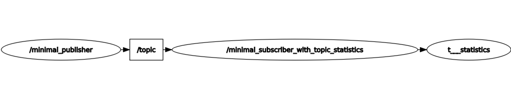

启用主题统计信息（C++） [3888]
**目标：**启用ROS 2主题统计功能并查看输出统计数据。 [3889]
教程级别： 高级 [校准]
时间: 10分钟 [校准]
目录 [16368]
背景 [校准]
This is a short tutorial on how to enable topic statistics in ROS 2 and view the published statistics output using command line tools (ros2topic). [校准]
ROS 2提供了对任何订阅接收的消息进行统计的集成测量功能，称为Topic Statistics。启用Topic Statistics功能后，您可以对系统的性能进行特征化，或者使用数据来帮助诊断任何现有的问题。 [校准]
For more details please see the Topic Statistics Concepts Page. [校准]
任务 [校准]
1. 使用启用统计信息的订阅者节点进行编写。 [校准]
进入``ros2_ws/src/cpp_pubsub/src``文件夹，该文件夹是在 先前的教程 中创建的，然后输入以下命令下载示例发布者代码： [校准]
wget -O member_function_with_topic_statistics.cpp https://raw.githubusercontent.com/ros2/examples/humble/rclcpp/topics/minimal_subscriber/member_function_with_topic_statistics.cpp
wget -O member_function_with_topic_statistics.cpp https://raw.githubusercontent.com/ros2/examples/humble/rclcpp/topics/minimal_subscriber/member_function_with_topic_statistics.cpp
右键点击此链接，选择“另存为”，命名为``publisher_member_function.cpp``： [校准]
https://raw.githubusercontent.com/ros2/examples/humble/rclcpp/topics/minimal_subscriber/member_function_with_topic_statistics.cpp [校准]
现在会有一个名为``member_function_with_topic_statistics.cpp``的新文件。使用您喜欢的文本编辑器打开该文件。 [校准]
#include <chrono>
#include <memory>
#include "rclcpp/rclcpp.hpp"
#include "rclcpp/subscription_options.hpp"
#include "std_msgs/msg/string.hpp"
class MinimalSubscriberWithTopicStatistics : public rclcpp::Node
{
public:
MinimalSubscriberWithTopicStatistics()
: Node("minimal_subscriber_with_topic_statistics")
{
// manually enable topic statistics via options
auto options = rclcpp::SubscriptionOptions();
options.topic_stats_options.state = rclcpp::TopicStatisticsState::Enable;
// configure the collection window and publish period (default 1s)
options.topic_stats_options.publish_period = std::chrono::seconds(10);
// configure the topic name (default '/statistics')
// options.topic_stats_options.publish_topic = "/topic_statistics"
auto callback = [this](std_msgs::msg::String::SharedPtr msg) {
this->topic_callback(msg);
};
subscription_ = this->create_subscription<std_msgs::msg::String>(
"topic", 10, callback, options);
}
private:
void topic_callback(const std_msgs::msg::String::ConstSharedPtr msg) const
{
RCLCPP_INFO(this->get_logger(), "I heard: '%s'", msg->data.c_str());
}
rclcpp::Subscription<std_msgs::msg::String>::SharedPtr subscription_;
};
int main(int argc, char * argv[])
{
rclcpp::init(argc, argv);
rclcpp::spin(std::make_shared<MinimalSubscriberWithTopicStatistics>());
rclcpp::shutdown();
return 0;
}
1.1 检查代码 [校准]
就像在 C++ 教程中一样，我们有一个订阅器节点，它从 topic_callback 函数中的 topic 主题接收字符串消息。然而，我们现在添加了选项来配置订阅以启用使用 rclcpp::SubscriptionOptions() 选项结构的主题统计。 [校准]
// manually enable topic statistics via options
auto options = rclcpp::SubscriptionOptions();
options.topic_stats_options.state = rclcpp::TopicStatisticsState::Enable;
还可以选择配置诸如统计收集/发布周期和用于发布统计的主题等字段。 [校准]
// configure the collection window and publish period (default 1s)
options.topic_stats_options.publish_period = std::chrono::seconds(10);
// configure the topic name (default '/statistics')
// options.topic_stats_options.publish_topic = "/my_topic"
可配置的字段在以下表格中描述： [校准]
订阅配置字段 [校准] |
目的 [校准] |
|---|---|
topic_stats_options.state [校准] |
启用或禁用主题统计信息（默认值为 |
topic_stats_options.publish_period [校准] |
收集统计数据并发布统计消息的时间周期（默认为 |
topic_stats_options.publish_topic [校准] |
发布统计数据时使用的主题（默认为 |
1.2 CMakeLists.txt [校准]
现在打开 CMakeLists.txt 文件。 [校准]
添加可执行文件，并将其命名为``listener_with_topic_statistics``，这样你就可以使用``ros2 run``来运行你的节点： [校准]
add_executable(listener_with_topic_statistics src/member_function_with_topic_statistics.cpp)
ament_target_dependencies(listener_with_topic_statistics rclcpp std_msgs)
install(TARGETS
talker
listener
listener_with_topic_statistics
DESTINATION lib/${PROJECT_NAME})
确保保存文件，然后启用主题统计的发布/订阅系统就可以使用了。 [校准]
2 构建和运行 [校准]
要进行构建，请参阅发布/订阅教程中的 构建和运行 部分。 [校准]
以启用统计信息的方式运行订阅者节点： [校准]
ros2 run cpp_pubsub listener_with_topic_statistics
现在运行对话节点： [校准]
ros2 run cpp_pubsub talker
终端应该会每0.5秒发布一条信息消息，如下所示： [校准]
[INFO] [minimal_publisher]: Publishing: "Hello World: 0"
[INFO] [minimal_publisher]: Publishing: "Hello World: 1"
[INFO] [minimal_publisher]: Publishing: "Hello World: 2"
[INFO] [minimal_publisher]: Publishing: "Hello World: 3"
[INFO] [minimal_publisher]: Publishing: "Hello World: 4"
监听器将从发布者当前的消息计数开始，将消息打印到控制台，就像这样： [校准]
[INFO] [minimal_subscriber_with_topic_statistics]: I heard: "Hello World: 10"
[INFO] [minimal_subscriber_with_topic_statistics]: I heard: "Hello World: 11"
[INFO] [minimal_subscriber_with_topic_statistics]: I heard: "Hello World: 12"
[INFO] [minimal_subscriber_with_topic_statistics]: I heard: "Hello World: 13"
[INFO] [minimal_subscriber_with_topic_statistics]: I heard: "Hello World: 14"
现在，订阅者节点正在接收消息，它将定期发布统计消息。我们将在下一节观察这些消息。 [校准]
3 观察发布的统计数据 [校准]
在节点运行时，打开一个新的终端窗口。执行以下命令： [校准]
ros2 topic list
这将列出所有当前活动的主题。您应该会看到以下内容： [校准]
/parameter_events
/rosout
/statistics
/topic
如果您之前在教程中选择性地更改了``topic_stats_options.publish_topic``字段，则会看到该名称而不是``/statistics``。 [校准]
您创建的订阅节点正在将主题``topic``的统计信息发布到输出主题``/statistics``。 [校准]
We can visualize this using RQt [校准]
现在我们可以使用以下命令查看发布到此主题的统计数据： [校准]
ros2 topic echo /statistics
终端应该每10秒开始发布统计消息，因为``topic_stats_options.publish_period``订阅配置在教程早期已经可选更改过。 [校准]
---
measurement_source_name: minimal_subscriber_with_topic_statistics
metrics_source: message_age
unit: ms
window_start:
sec: 1594856666
nanosec: 931527366
window_stop:
sec: 1594856676
nanosec: 930797670
statistics:
- data_type: 1
data: .nan
- data_type: 3
data: .nan
- data_type: 2
data: .nan
- data_type: 5
data: 0.0
- data_type: 4
data: .nan
---
measurement_source_name: minimal_subscriber_with_topic_statistics
metrics_source: message_period
unit: ms
window_start:
sec: 1594856666
nanosec: 931527366
window_stop:
sec: 1594856676
nanosec: 930797670
statistics:
- data_type: 1
data: 499.2746365105009
- data_type: 3
data: 500.0
- data_type: 2
data: 499.0
- data_type: 5
data: 619.0
- data_type: 4
data: 0.4463309283488427
---
从`消息定义 <https://github.com/ros2/rcl_interfaces/tree/humble/statistics_msgs>`__ 中，``data_types``如下： [校准]
data_type 值 [校准] |
统计数据 [校准] |
|---|---|
1 [校准] |
平均值 [校准] |
2 [校准] |
最小值 [校准] |
3 [校准] |
最大值 [校准] |
4 [校准] |
标准差 [校准] |
5 [校准] |
样本数量 [校准] |
在这里，我们可以看到通过``minimal_publisher``发布到``/topic``的``std_msgs::msg::String``消息的两个当前可能计算出的统计数据。因为``std_msgs::msg::String``没有消息头，所以无法进行``message_age``的计算，因此返回NaN。然而，``message_period``可以计算，并且我们可以在上面的消息中看到填充的统计数据。 [校准]